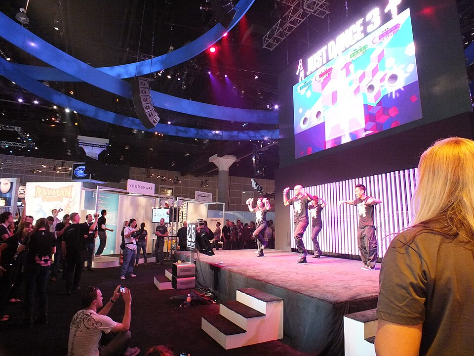

一起來選歌
爸爸媽媽先看過，再一起選。
結論
先選簡單的歌，再慢慢變難。
選歌三步驟
看難度
從最簡單的開始。
看舞蹈
大人先看影片。
自己選
選出喜歡的歌。

給家長看：歌曲把關建議與資料來源
目前查不到官方的「適齡歌單」。下表是依歌名和歌手的印象分類，沒有逐首看過歌詞和舞蹈，建議家長先試玩。
| 建議 | Just Dance 2026 Edition 歌曲 | 說明 |
|---|---|---|
| 可以先試 | All Star（Smash Mouth） | 電影《史瑞克》的知名歌曲，氣氛歡樂 |
| 可以先試 | Big Bad Frog（Austin & Colin） | 歌名很有童趣，但內容未確認，先看一下 |
| 可以先試 | Viva La Vida（Coldplay） | 歌詞沒有不雅內容，但主題較抽象 |
| 家長先看 | APT.（ROSÉ & Bruno Mars） | 很紅也很洗腦，但靈感來自韓國的飲酒遊戲 |
| 家長先看 | Abracadabra、Zombieboy（Lady Gaga） | 風格偏成人或偏暗黑，舞蹈也可能比較成熟 |
| 先跳過 | Thrift Shop（Macklemore & Ryan Lewis） | 原曲有粗話，遊戲版是否修改未查證 |
| 先跳過 | Anxiety（Doechii） | 主題是焦慮，對這個年紀來說偏沉重 |
- 迪士尼歌曲：2018 版有《海洋奇緣》的歌。
- Baby Shark：資料顯示 2018 版有收錄，但小三孩子可能會覺得太幼稚。
- Kids Mode：2018 到 2022 版才有。2018 版這個模式的歌是為 3 到 6 歲設計的。